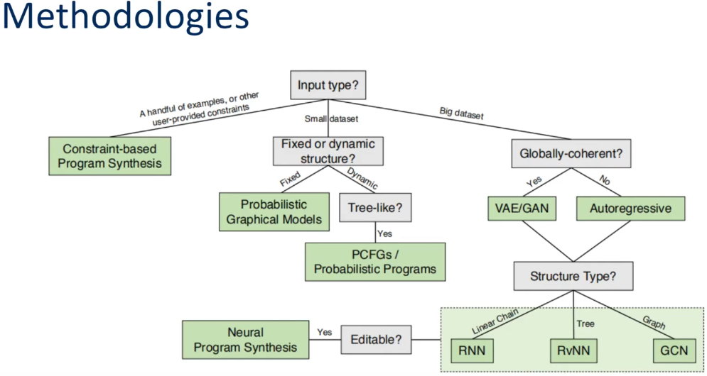
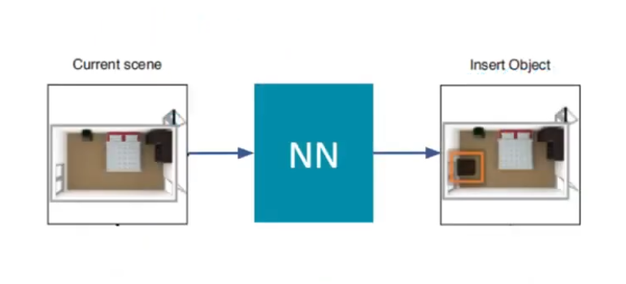

Notes on Learning Generative Models of 3D Structures
Overview
I wanted to get an idea of where the research is at for using deep learning models to generate 3D models for applications in procedural generation tools and creating synthetic datasets. I came across a video going over the 2020 paper, Learning Generative Models of 3D Structures. Below are some notes I took while watching.
Motivation
- 3D Graphics are now critical to many industries
- Huge cost in data capture and human labeling leads to lack of training data
Generative models
generative: \[ P(X) \ vs \ discriminative: P(Y|X) \]
Instead of learning to predict some attribute Y given an input X, the generative model learns the entire input distribution, enabling them to sample objects directly from X
Can be useful in simulating real-world environments and synthetically generating training data
Structure-Aware Representations
- Scope: learned generative models of structured 3D content
Learned:
- Determined with data ↔︎ By hand or rules
Structured:
- 3D shapes and scenes that are decomposed into sub-structures ↔︎ a monolithic chunk of geometry

Structure-Aware
- Express 3D shapes and scenes using abstractions that allow manipulation of their high-level structure
- represent the geometry of the atomic structural elements
- represent the structural patterns
Structure-Aware Representations
- Representations of Part/Object Geometry
- Voxel Grid
- Point Cloud
- Implicit Surface
- A function that determines whether a point is inside or outside a surface
- Triangle Mesh
- Representations of Structure
- Segmented geometry
- Links a label to each part of the entity’s geometry
- Part sets
- an unordered set of atoms (pieces)
- Relationship graphs
- With edges between different parts of a scene or object
- Hierarchies (trees)
- Hierarchical Graphs
- Combine relationship graphs and hierarchies
- Deterministic Programs
- Can be made to output any of the above representations
- Beneficial for making patterns clear
- Allows editing by users
- Segmented geometry
Methodologies

Program synthesis
- Constrain-based program synthesis
- Used when only a few training examples are available
- Tries to find the minimum cost program while satisfying some constraints
Classical Probabilistic Models
- Probabilistic graphical models
- Input Type:
- Small dataset, not large enough to train a deep learning model
- Fixed structure
- Examples:
- Factor graph
- Bayesian network
- Markov random field
- Input Type:
- Probabilistic grammars
- Input Type:
- Small dataset, not large enough to train a deep learning model
- Dynamic, tree-like structure
- Examples:
- Context-free grammar (CFG)
- Used in natural language processing
- a start symbol
- a set of terminals and non-terminals
- a set of rules that map a non-terminal to another layout
- generates a tree where the leaf nodes are terminals
- Probabilistic CFG (PCFG)
- Adds a probability of each rule
- Context-free grammar (CFG)
- Input Type:
Deep Generative Models
- Input Type:
- Big dataset
- Autoregressive models
Input Type:
- Not globally-coherent
Iteratively consumes it’s output from one iteration as input for the next iteration

Weakness:
- If one step drifts from the training data, it can cause subsequent output to diverge further
- Deep latent variable models
- Input Type:
- Globally-coherent
- Variational AutoEncoders (VAE)
- Generative Adversarial Networks (GAN)
- Code Idea:
- Sample over a low dimensional latent space in a trained generator that maps latent vectors to actual 3D shapes which are hard to sample.
- Use a global latent variable to control the generation
- Trained with a reconstruction loss between the input and generated output
- Often perform better than autoregressive models in terms of global coherence
- Input Type:
Structure Type
- Recurrent Neural Network
- Data represented as a linear chain
- Recursive Neural Network RvNN
- Data represented as a tree
- Graph Convolutional Network
- Data represented as a graph
- Neural Program Synthesis
## Application
Synthesize a plausible program that recreates an existing piece of 3D content
Recover shape-generating programs from an existing 3D shape
Learning Shape Abstractions by Assembling Volumetric Primitives (2017)
- Learned to reconstruct 3D shapes with simple geometric primitives
- Decompose shapes into primitives and used chamfer distance as a loss function
- https://github.com/shubhtuls/volumetricPrimitives
Learning Shape Abstractions by Assembling Volumetric Primitives
Learning to Infer and Execute 3D Shape Programs (2019)
- Model can output a 3D shape program consisting of loops and other high level structures

https://camo.githubusercontent.com/6ca24189e3d22bcc13ffa1dd7ade51159a41006d78e3221a6f8c1c2476b728ff/687474703a2f2f73686170653270726f672e637361696c2e6d69742e6564752f73686170655f66696c65732f7465617365722e6a7067 - https://github.com/HobbitLong/shape2prog
Superquadrics Revisited: Learning 3D Shape Parsing beyond Cuboids
- https://github.com/paschalidoud/superquadric_parsing
Perform visual program induction directly from 2D images
- Liu et al. 2019 - Other Applications:
Part-based shape synthesis
Indoor scene synthesis
References: